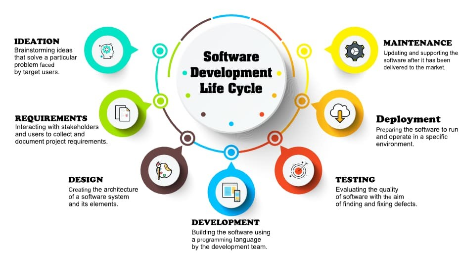

Experience Summary
Debaditya have more than 10 years of experiencesin Software Analysis, Requirement gathering and analysis, Design, Development, Testing, Production Support and Maintenance in Mainframes (COBOL, DB2, JCL, CICS, VSAM). Debaditya worked almost all phases of Software Design Life Cycle (SDLC) Process.
- Softwere Analysis: Debaditya worked in Software Analysis phase for the client Target Corporation involving the following activities:
- Recognizing the input/output sources and formats of the legacy system.
- Designing high-level process flow for the legacy system.
- Documentation of detailed flow and all constraints for the legacy system.
- Capturing the business rules out of the process flow for the legacy system.
- Requirement gathering and analysis: Debaditya had experience in Requirement gathering and analysis involving the following activities:
- Communicating with Onsite/Client the old business rules of the legacy system and discussing about the process improvements (if required).
- Gathering the new business rules and requirements from Onsite/Client.
- Analyzing the new requirements to capture any ambiguities or anomalies and communicating them to Onsite/client
- Finalizing the new requirements in Calibration document.
- Software Design: Debaditya had experience in Software Design phase in Target Corporation involving the following activities:
- Grouping the new requirements into different “Work Packets”.
- Finalizing the component lists of single “Work Packet”.
- Designing High-Level Design (HLD) Flow diagrams and High-Level Design (HLD) documents for the components from the requirements.
- Communicating the HLDs with Onsite for review and Signing off the HLDs from clients.
- Software Development & Unit Testing: Debaditya had experience in Software Development & Unit Testing phase in Target Corporation involving the following activities:
- Designing Low-Level Design (LLD) Flow diagrams and Low-Level Design (LLD) documents for the components from HLDs. Documenting the Unit Testing Plan (UTP) for the components
- Developing the component from LLD and testing the component as per UTP.
- Documenting the unit testing result (UTR).
- Work Packet/Integration Testing: Debaditya had experience in Integration/Work Packet testing in Target Corporation involing following activities:
- Documentation of test plan from requirement level.
- Integration of several components in a single job chain/module.
- Testing all the requirements in the “Work Packet” and validating the results.
- Documentation of the testing result and communicating the Work Packet Testing Result (WPTR).
- Production Support and Maintenance: Debaditya has experience in production support & maintenance in Hallmark Cards involving following activities:
- Resolving severity level 2 incidents as an on-call analyst.
- Managing and resolving severity level 3 & 4 incidents into Service-Now.
- Direct communication to the Hallmark users and different support groups to achieve quick solutions.
- Extensive analysis of different applications and system to achieve root cause & solutions of reoccurring problems.
- Installing different code level changes into production through exclusive Change Management System.
- Preparing different reports & involving in standard activities.
- Contributing the project by preparing a large number of problem solving documents and fixit processes.
- Planning and Implementing small projects for changing requirements, enhancements, design gaps.
- Managing offshore Team and coordinating with onsite team.
- Team Performance analysis and reporting.